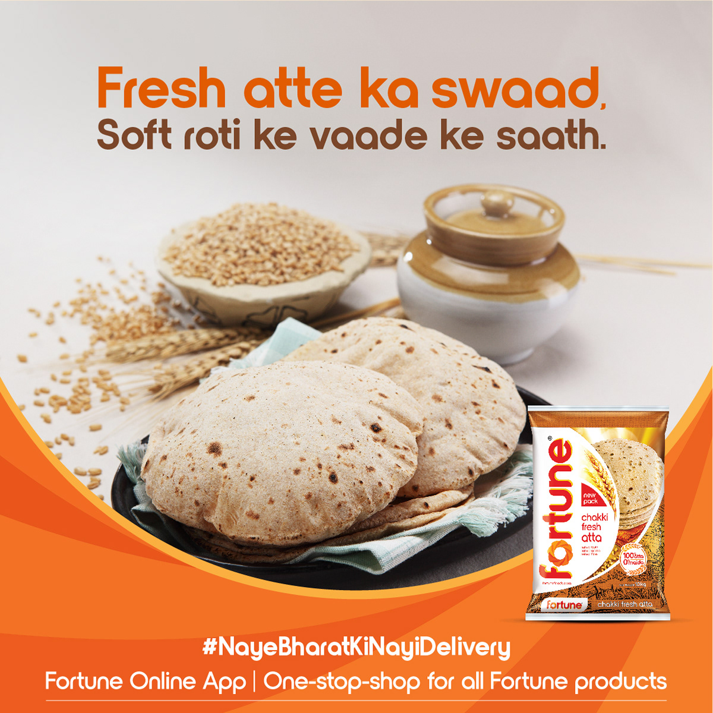
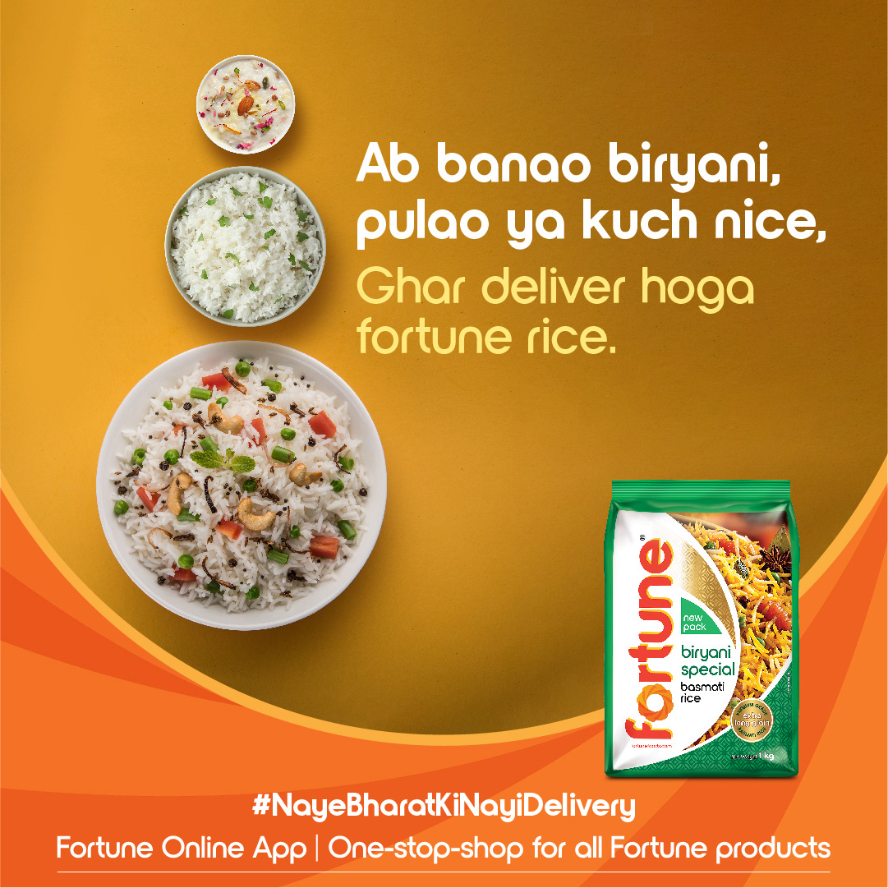

From brief to brand, end to end.
This was not a campaign execution brief. It was a brand-building brief for a product that did not yet exist in market. Fortune Online was Adani Wilmar's first direct-to-consumer platform, a new channel, a new relationship with the customer, and a new way of thinking about a brand that had previously only lived on supermarket shelves.
The brief was grocery. The problem was behaviour.
The strain on supermarkets amid the COVID-19, ensured that shorter supply chains and home deliveries stopped being a convenience and became a necessity. In 2021, Adani Wilmar launched Fortune Online, the only online platform dealing directly with consumers across the full Fortune product range.
The platform had strong product foundations: free delivery, first-order gifts, exclusive combos, doorstep access to everything from atta to edible oil. But the communication challenge was deeper than awareness. Fortune was a brand Indians trusted in the kitchen, not online. The task was to transfer that trust to a new behaviour, ordering groceries through an app, without losing the warmth and familiarity that made Fortune feel like home.
"Ab Chakki ka purana swaad, Fortune Online delivery ke saath. Keep the taste, change the habit."
The insight was to repackage the Fortune Oil's "Ghar Ka Khana, Ghar Ka Khana Hota Hai" campaigns and anchor our communications to celebrates the essence of home cooking on Digital Media by communicating the sights, sounds, and scents of home-cooked dishes, the protagonist. Something that no readymade substitute, no restaurant meal can replicate the love home-cooked food carries, or the smell of your mother's kitchen, a feeling that every Indian already owns. And in doing so, our goal was that Fortune Online becomes part of that feeling. To it, we sprinkled the ideas of the chakki, the stone mill, for freshness, purity and home. And even animated recipe videos. The launch campaign's job was to extend it into a new context: doorstep delivery.
Rather than positioning Fortune Online as a technology convenience, we framed it as a restoration. The old taste, now reachable without leaving home. #NayeBharatKiNayiDelivery carried both registers simultaneously: new India, new delivery, but the same Fortune your family has always trusted.
Brand & product creative gallery.
A visual walkthrough of the digital assets, product combos, and promotional creatives that launched Fortune Online.





Brand Launch Video.
The main brand film introducing Fortune Online to households across India.
Multiple formats. One consistent idea.
Rather than producing a single hero campaign, we built a content ecosystem. Multiple video formats designed to serve different stages of the customer journey, from awareness to conversion to retention. Each format was distinct in style but unified in voice.
Content ran across YouTube, Facebook and digital handles, with YouTube carrying the longer-form brand story and Facebook & Instagram driving tactical engagement and festival moments.
Numbers from a brand-new channel.
"Fortune Online was not just a new app. By anchoring a D2C launch in sensory memory rather than technology convenience, the work gave Fortune Online trust on day one."